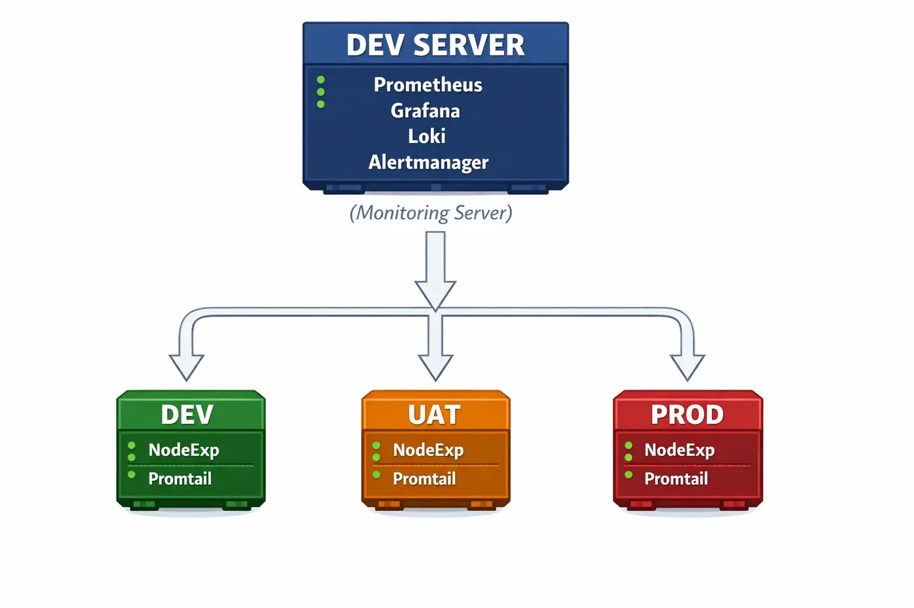

Observability
Production Monitoring Stack
Centralized, containerized observability across environments.
Problem
No centralized monitoring across environments.
Solution
Built a containerized monitoring system using Prometheus, Grafana and Loki.
Architecture

Impact
- Improved visibility
- Reduced downtime
- Enabled proactive alerting